工作台
项目摘要、分析准备状态和下一步入口。 查看原图

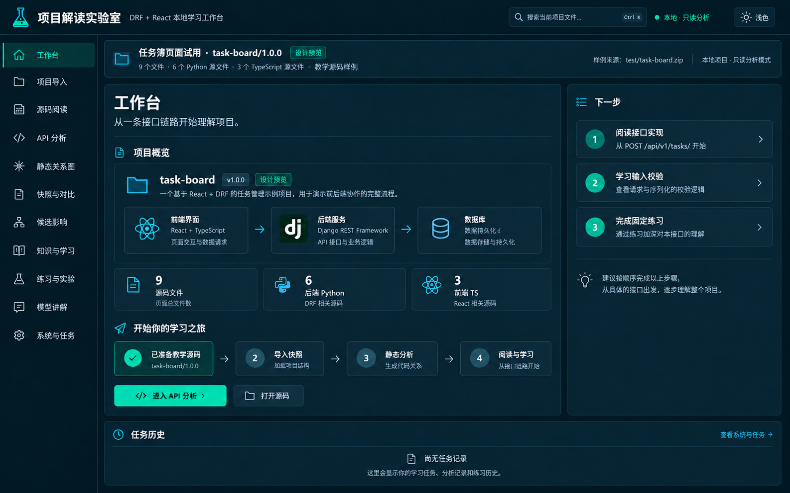
使用 test/task-board.zip（task-board/1.0.0，9 个源码文件）作为内容依据。沿用深色青绿色外壳，各模块独立标题、布局和操作。图片按 1440×900 桌面布局比例设计，生成原图为 1586×992。
这些图片用于确认页面分工与视觉方向。接口输入/响应、服务关系和讲解范围属于源码阅读示意；实际应用遵循现有 API 的可用信息和安全边界。图片不代表已执行实验、模型调用、学习完成或快照差异。源码图采用摘录，实际行号以源码阅读窗口为准。
项目摘要、分析准备状态和下一步入口。 查看原图

ZIP 上传、只读导入规则及快照结果。 查看原图
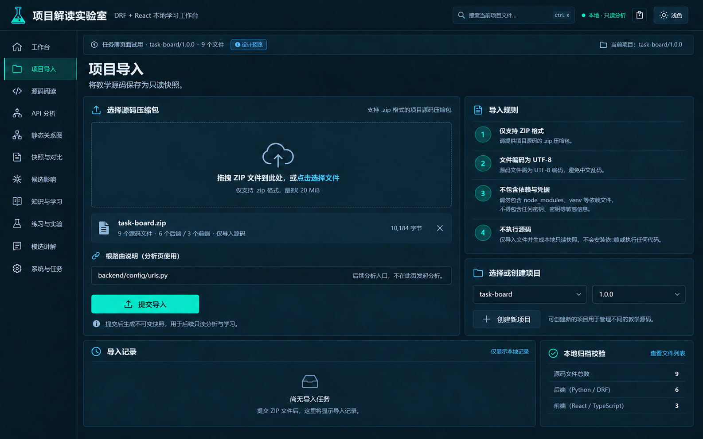
文件树、分段源码和双窗口定位。 查看原图
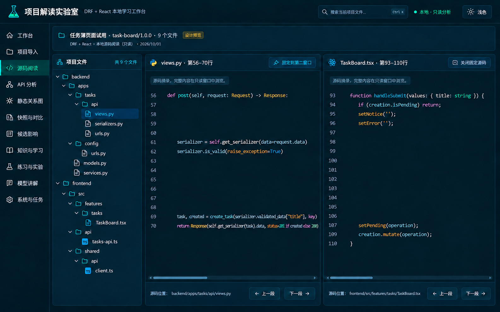
接口清单、前后端来源及输入响应的源码阅读示意。 查看原图
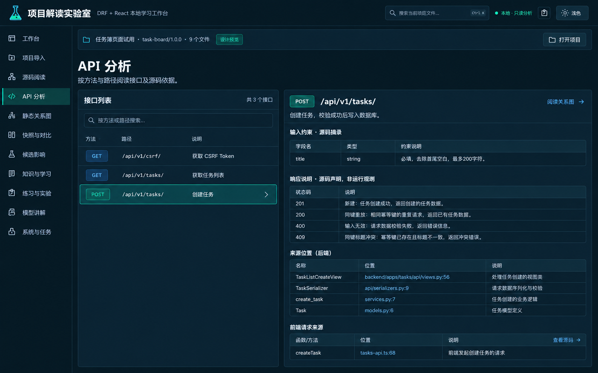
静态节点、关联路径和节点证据示意。 查看原图
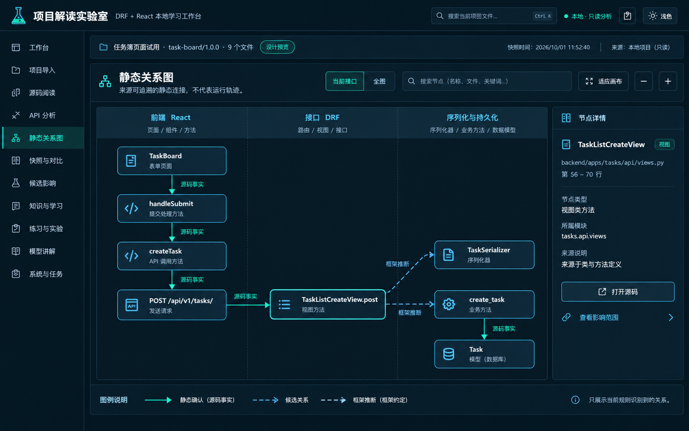
快照时间线；样例只有一份快照时明确要求第二份。 查看原图
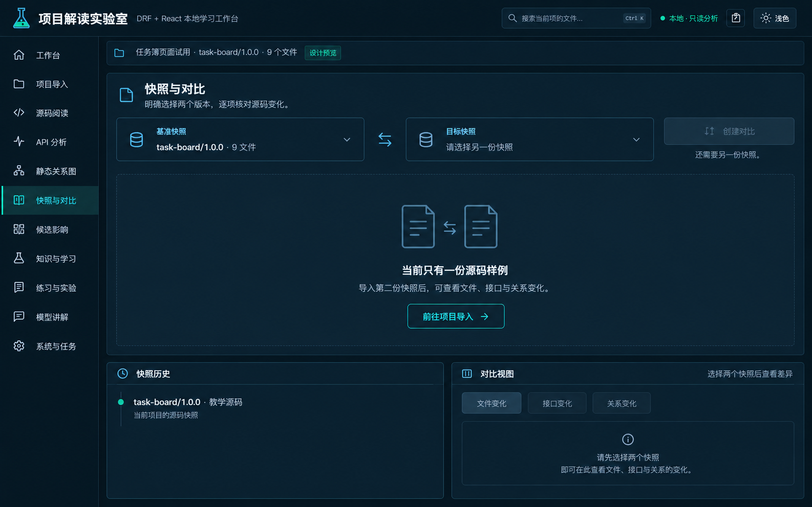
选择影响起点，核对路径及候选关系人工决定。 查看原图
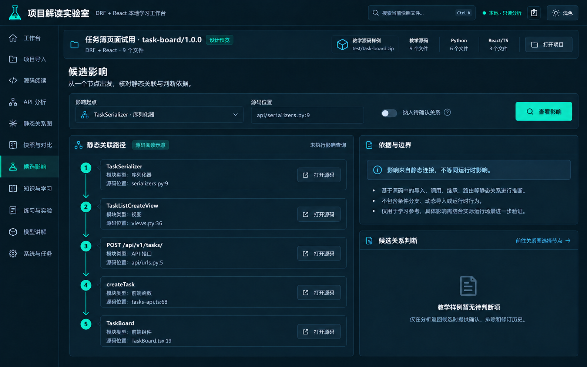
知识卡片、学习目标和先修路径。 查看原图
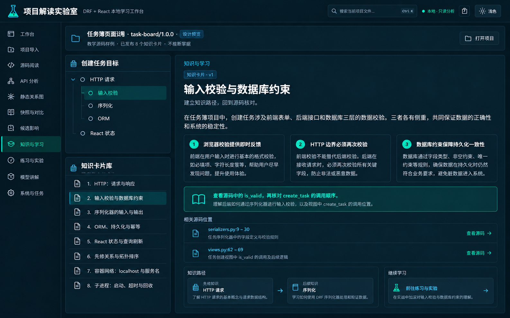
固定练习、回顾和受控实验；初始待作答、待运行。 查看原图
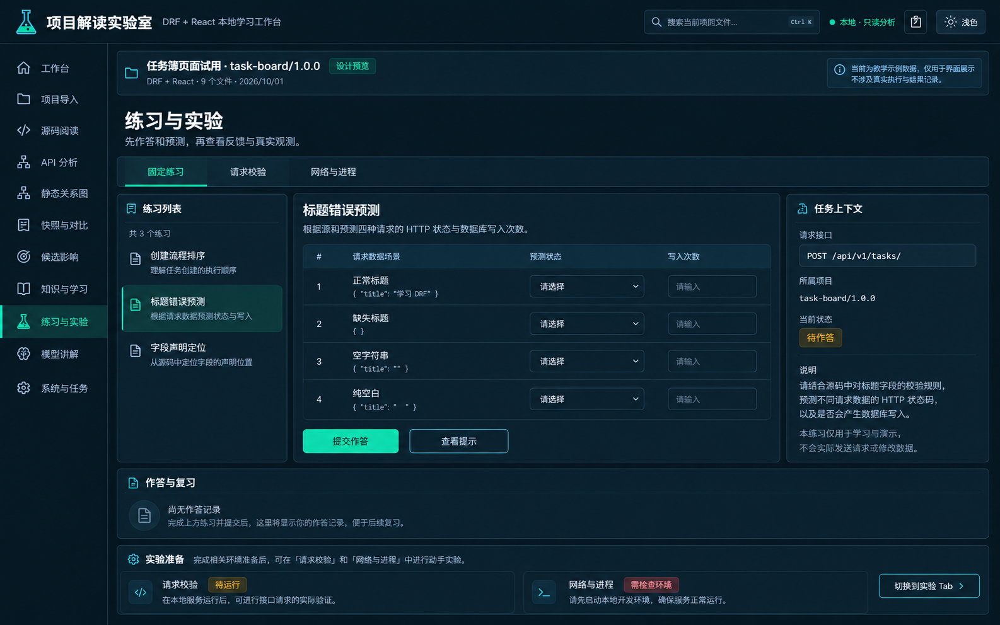
本地讲解、源码引用和模型单次外发确认。 查看原图
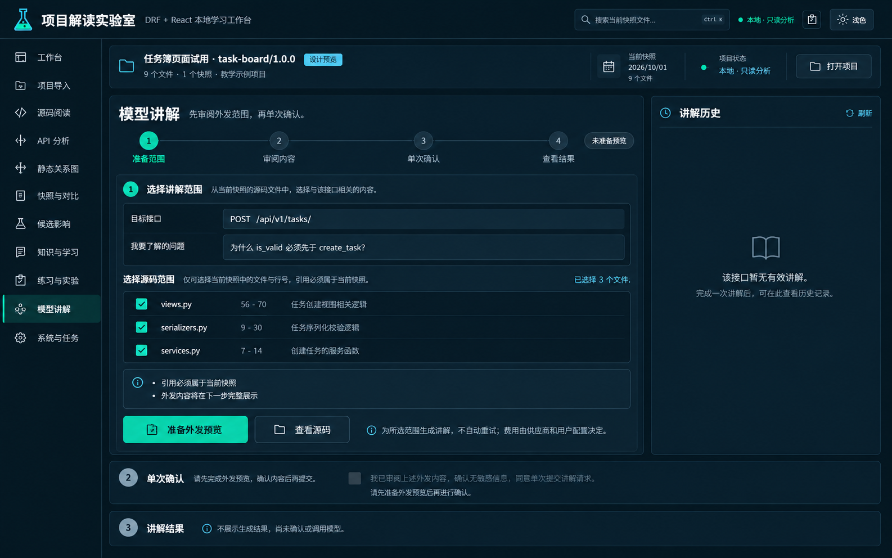
基础检查、任务状态和历史；未检查时不展示结果。 查看原图
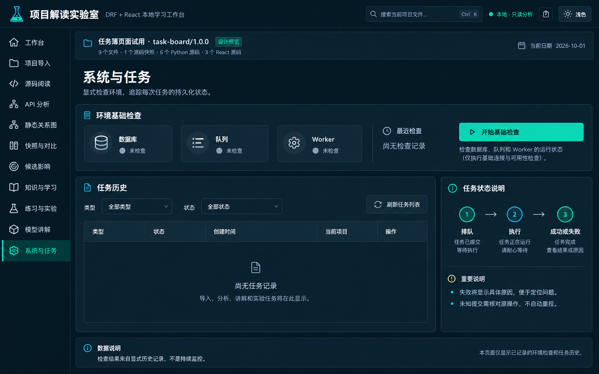